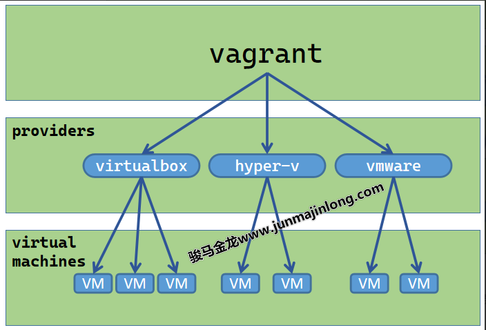

Chapter 1 - vagrant简介
- vagrant 官网：https://www.vagrantup.com/
- vagrant 官方文档： https://www.vagrantup.com/docs
- vagrant image box：https://app.vagrantup.com/boxes/search
vagrant基本概念
vagrant可方便地管理各种类型的虚拟机，包括virtualbox、hyper-v、docker、vmware、kvm。它是vmware/virtualbox/hyperv等虚拟化管理工具的上层集成式管理工具、虚拟机自动化配置工具、虚拟机批量管理工具。支持Windows、MAC以及Linux。

vagrant管理虚拟机常用子命令功能介绍
vagrant的子命令不少，可使用vagrant -h列出vagrant默认支持的子命令，使用vagrant list-commands查看vagrant支持的所有子命令(包括因安装插件而增加的子命令)。
这里只是简单概括常用子命令的功能。
| 子命令 | 功能说明 |
|---|---|
| box | 管理box镜像(box是创建虚拟机的模板) |
| init | 初始化项目目录，将在当前目录下生成Vagrantfile文件 |
| up | 启动虚拟机，第一次执行将创建并初始化并启动虚拟机 |
| reload | 重启虚拟机 |
| halt | 将虚拟机关机 |
| destroy | 删除虚拟机(包括虚拟机文件) |
| suspend | 暂停(休眠、挂起)虚拟机 |
| resume | 恢复已暂停(休眠、挂起)的虚拟机 |
| snapshot | 管理虚拟机快照(hyperv中叫检查点) |
| status | 列出当前目录(Vagrantfile所在目录)下安装的虚拟机列表及它们的状态 |
| global-status | 列出全局已安装虚拟机列表及它们的状态 |
| ssh | 通过ssh连接虚拟机 |
| ssh-config | 输出ssh连接虚拟机时使用的配置项 |
| port | 查看各虚拟机映射的端口列表(hyperv不支持该功能) |
- vagrant box
- vagrant box list
- vagrant box add [options] <name, url, or path>
- vagrant box add generic/centos8 --provider=docker
- [virtualbox/libvirt/docker...]
- vagrant init [options] [name [url]]
- vagrant up [options] [name|id]
- vagrant destroy [options] [name|id]
- vagrant status [name|id]
- vagrant global-status
- vagrant ssh [options] [name|id] [-- extra ssh args]
- vagrant ssh-config [options] [name|id]